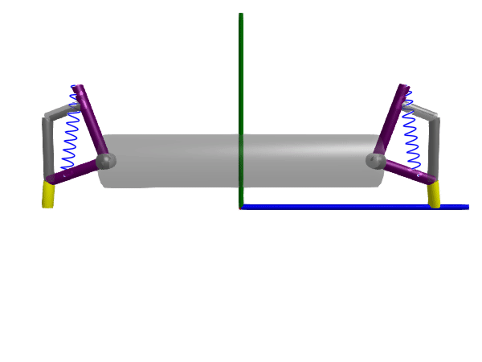
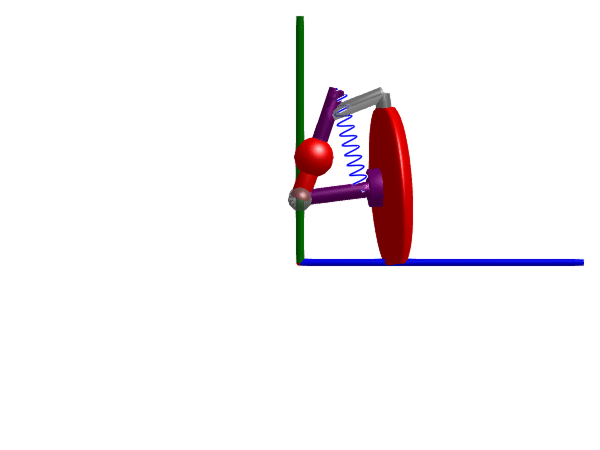
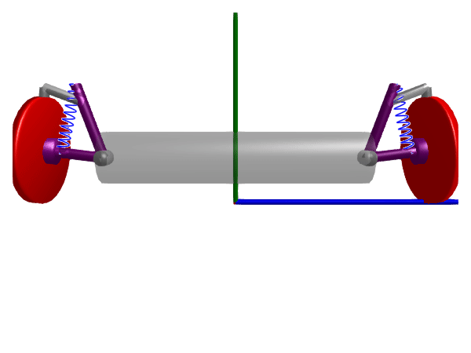
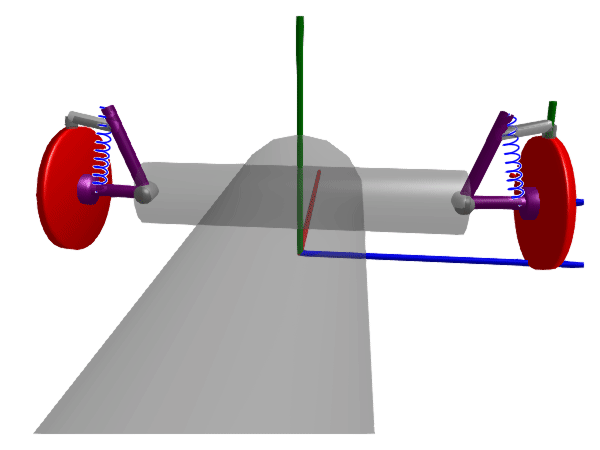

Quarter-car suspension
A simple suspension system for one wheel, roughly modeled after "Interaction between asymmetrical damping and geometrical nonlinearity in vehicle suspension systems improves comfort", Fernandes et al. 2020.

We model only the suspension, and excite the system with a force from the ground through a rod connected where the wheel would be. The actuation rod is modeled as a SphericalSpherical joint to avoid over constraining the system. We further add a prismatic joint called body_upright to hold the "car body" to the world frame. This allows the body to move up and down, but not sideways or rotate.
using Multibody
using ModelingToolkit
import ModelingToolkitStandardLibrary.Mechanical.TranslationalModelica as Translational
using Plots
using OrdinaryDiffEq
using LinearAlgebra
using JuliaSimCompiler
using Test
t = Multibody.t
D = Differential(t)
n = [1, 0, 0]
AB = 146.5 / 1000
BC = 233.84 / 1000
CD = 228.60 / 1000
DA = 221.43 / 1000
BP = 129.03 / 1000
DE = 310.31 / 1000
t5 = 19.84 |> deg2rad
@mtkmodel QuarterCarSuspension begin
@structural_parameters begin
spring = true
(jc = [0.5, 0.5, 0.5, 0.7])#, [description = "Joint color"]
mirror = false
end
@parameters begin
cs = 4000, [description = "Damping constant [Ns/m]"]
ks = 44000, [description = "Spring constant [N/m]"]
rod_radius = 0.02
jr = 0.03, [description = "Radius of revolute joint"]
end
begin
dir = mirror ? -1 : 1
rRod1_ia = AB*normalize([0, -0.1, 0.2dir])
rRod2_ib = BC*normalize([0, 0.2, 0dir])
end
@components begin
r123 = JointRRR(n_a = n*dir, n_b = n*dir, rRod1_ia, rRod2_ib, rod_radius=0.018, rod_color=jc)
r2 = Revolute(; n=n*dir, radius=jr, color=jc)
b1 = FixedTranslation(radius = rod_radius, r = CD*normalize([0, -0.1, 0.3dir])) # CD
chassis = FixedTranslation(r = DA*normalize([0, 0.2, 0.2*sin(t5)*dir]), render=false)
chassis_frame = Frame()
if spring
springdamper = SpringDamperParallel(c = ks, d = cs, s_unstretched = 1.3*BC, radius=rod_radius, num_windings=10)
end
if spring
spring_mount_F = FixedTranslation(r = 0.7*CD*normalize([0, -0.1, 0.3dir]), render=false)
end
if spring
spring_mount_E = FixedTranslation(r = 1.3DA*normalize([0, 0.2, 0.2*sin(t5)*dir]), render=true)
end
end
begin
A = chassis.frame_b
D = chassis.frame_a
end
@equations begin
# Main loop
connect(A, r123.frame_a)
connect(r123.frame_b, b1.frame_b)
connect(b1.frame_a, r2.frame_b)
connect(r2.frame_a, D)
# Spring damper
if spring
connect(springdamper.frame_b, spring_mount_E.frame_b)
connect(b1.frame_a, spring_mount_F.frame_a)
connect(D, spring_mount_E.frame_a)
connect(springdamper.frame_a, spring_mount_F.frame_b)
end
connect(chassis_frame, chassis.frame_a)
end
end
mirror = false
@mtkmodel SuspensionWithExcitation begin
@structural_parameters begin
mirror = false
end
@parameters begin
ms = 1500, [description = "Mass of the car [kg]"]
rod_radius = 0.02
amplitude = 0.1, [description = "Amplitude of wheel displacement"]
freq = 2, [description = "Frequency of wheel displacement"]
end
begin
dir = mirror ? -1 : 1
end
@components begin
fixed = Fixed()
chassis_frame = Frame()
suspension = QuarterCarSuspension(; spring=true, mirror, rod_radius)
wheel_prismatic = Prismatic(n = [0,1,0], axisflange=true, state_priority=100, iscut=false)
actuation_rod = SphericalSpherical(radius=rod_radius, r_0 = [0, BC, 0])
actuation_position = FixedTranslation(r = [0, 0, CD*dir], render=false)
wheel_position = Translational.Position(exact=true)
end
@equations begin
wheel_position.s_ref.u ~ amplitude*(sin(2pi*freq*t)) # Displacement of wheel
connect(wheel_position.flange, wheel_prismatic.axis)
connect(fixed.frame_b, actuation_position.frame_a)
connect(actuation_position.frame_b, wheel_prismatic.frame_a)
connect(wheel_prismatic.frame_b, actuation_rod.frame_a,)
connect(actuation_rod.frame_b, suspension.r123.frame_ib)
connect(chassis_frame, suspension.chassis_frame)
end
end
@mtkmodel SuspensionWithExcitationAndMass begin
@structural_parameters begin
mirror = false
end
@parameters begin
ms = 1500, [description = "Mass of the car [kg]"]
rod_radius = 0.02
end
begin
dir = mirror ? -1 : 1
end
@components begin
world = World()
mass = Body(m=ms, r_cm = 0.5DA*normalize([0, 0.2, 0.2*sin(t5)*dir]))
excited_suspension = SuspensionWithExcitation(; suspension.spring=true, mirror, rod_radius)
body_upright = Prismatic(n = [0, 1, 0], render = false, state_priority=1000)
end
@equations begin
connect(world.frame_b, body_upright.frame_a)
connect(body_upright.frame_b, excited_suspension.chassis_frame, mass.frame_a)
end
end
@named model = SuspensionWithExcitationAndMass()
model = complete(model)
ssys = structural_simplify(multibody(model))
defs = [
model.body_upright.s => 0.17
model.excited_suspension.amplitude => 0.05
model.excited_suspension.freq => 10
model.excited_suspension.suspension.ks => 30*44000
model.excited_suspension.suspension.cs => 30*4000
model.ms => 1500/4
model.excited_suspension.suspension.springdamper.num_windings => 10
# model.r1.phi => -1.0889
model.excited_suspension.suspension.r2.phi => -0.6031*(mirror ? -1 : 1)
# model.r3.phi => 0.47595
model.body_upright.v => 0.14
]
display(sort(unknowns(ssys), by=string))
prob = ODEProblem(ssys, defs, (0, 2))
sol = solve(prob, FBDF(autodiff=true))
@test SciMLBase.successful_retcode(sol)
rms(x) = sqrt(sum(abs2, x) / length(x))
@test rms(sol(0:0.1:2, idxs=model.body_upright.v)) ≈ 2.740 atol=0.01Test Passedimport GLMakie
Multibody.render(model, sol, show_axis=false, x=-1, y=0.3, z=0.3, lookat=[0,0.3,0.3], timescale=3, filename="suspension.gif") # VideoDue to the high excitation frequency, we make use of the argument timescale = 3 when we render the 3D animation to slow down the animation by a factor of 3.
Half-car suspension
In the example below, we extend the previous example to a half-car model with two wheels. We now model the car as a BodyShape and attach one suspension system on each side. This time, we let the car rotate around the x-axis to visualize roll effects due to uneven road surfaces. We excite each wheel with similar but slightly different frequencies to produce a beat.
@mtkmodel DoubleSuspensionWithExcitationAndMass begin
@structural_parameters begin
wheel_base = 1
end
@parameters begin
ms = 1500, [description = "Mass of the car [kg]"]
rod_radius = 0.02
end
@components begin
world = World()
mass = BodyShape(m=ms, r = [0,0,-wheel_base], radius=0.1, color=[0.4, 0.4, 0.4, 0.3])
excited_suspension_r = SuspensionWithExcitation(; suspension.spring=true, mirror=false, rod_radius,
actuation_position.r = [0, 0, (CD+wheel_base/2)],
actuation_rod.r_0 = r_0 = [0, 0.1, 0],
)
excited_suspension_l = SuspensionWithExcitation(; suspension.spring=true, mirror=true, rod_radius,
actuation_position.r = [0, 0, -(CD+wheel_base/2)],
actuation_rod.r_0 = r_0 = [0, 0.1, 0],
)
body_upright = Prismatic(n = [0, 1, 0], render = false, state_priority=1000)
body_upright2 = Revolute(n = [1, 0, 0], render = false, state_priority=1000, phi0=0, w0=0)
# body_upright = Planar(n = [1, 0, 0], n_x = [0,0,1], render = false, state_priority=1000, radius=0.01)
end
@equations begin
connect(world.frame_b, body_upright.frame_a)
connect(body_upright.frame_b, body_upright2.frame_a)
connect(body_upright2.frame_b, mass.frame_cm)
# connect(body_upright.frame_b, mass.frame_cm)
connect(excited_suspension_r.chassis_frame, mass.frame_a)
connect(excited_suspension_l.chassis_frame, mass.frame_b)
end
end
@named model = DoubleSuspensionWithExcitationAndMass()
model = complete(model)
ssys = structural_simplify(multibody(model))
defs = [
model.excited_suspension_r.amplitude => 0.05
model.excited_suspension_r.freq => 10
model.excited_suspension_r.suspension.ks => 30*44000
model.excited_suspension_r.suspension.cs => 30*4000
model.excited_suspension_r.suspension.r2.phi => -0.6031
model.excited_suspension_l.amplitude => 0.05
model.excited_suspension_l.freq => 9.5
model.excited_suspension_l.suspension.ks => 30*44000
model.excited_suspension_l.suspension.cs => 30*4000
model.excited_suspension_l.suspension.r2.phi => -0.6031
model.ms => 1500/2
model.body_upright.s => 0.17
model.body_upright.v => 0.14
# model.body_upright.prismatic_y.s => 0.17
# model.body_upright.prismatic_y.v => 0.14
]
display(sort(unknowns(ssys), by=string))
prob = ODEProblem(ssys, defs, (0, 4))
sol = solve(prob, FBDF(autodiff=true), initializealg = ShampineCollocationInit())
@test SciMLBase.successful_retcode(sol)Test PassedMultibody.render(model, sol, show_axis=false, x=-1.5, y=0.3, z=0.0, lookat=[0,0.1,0.0], timescale=3, filename="suspension_halfcar.gif") # Video
Adding wheels
The example below further extends the example from above by adding wheels to the suspension system. The excitation is not modeled as a time-varying surface profile, provided through the surface argument to the SlippingWheel component. The connection between the wheels and the ground form two kinematic loops together with the body_upright joint, which we can handle in one of two ways.
- include a cut joint in the loop, e.g., by setting all wheels to be cut joints using
iscut=true. - Remove angular state variables from the wheels by passing
state = false. Since we do not need the angular state variables in this case, we choose this option which reduces the total number of unknowns to solve for.
We start by adding a wheel to the quarter-car setup and then to the half-car setup.
Quarter car
using ModelingToolkitStandardLibrary.Mechanical.Rotational
@mtkmodel ExcitedWheelAssembly begin
@structural_parameters begin
mirror = false
iscut = true
end
@parameters begin
rod_radius = 0.02
amplitude = 0.02, [description = "Amplitude of wheel displacement"]
freq = 2, [description = "Frequency of wheel displacement"]
end
begin
dir = mirror ? -1 : 1
end
@components begin
chassis_frame = Frame()
suspension = QuarterCarSuspension(; spring=true, mirror, rod_radius)
wheel_rotation = Revolute(n = [0, 0, dir], axisflange=true) # Wheel rotation axis
rotational_losses = Rotational.Damper(d = 0.1)
wheel = SlippingWheel(
radius = 0.2,
m = 15,
I_axis = 0.8,
I_long = 0.8,
x0 = 0.0,
z0 = 0.0,
state = false,
# iscut = true,
# Note the ParentScope qualifier, without this, the parameters are treated as belonging to the wheel.wheel_joint component instead of the ExcitedWheelAssembly
surface = (x,z)->ParentScope(ParentScope(amplitude))*(sin(2pi*ParentScope(ParentScope(freq))*t)), # Excitation from a time-varying surface profile
)
end
@equations begin
connect(wheel.frame_a, wheel_rotation.frame_b)
connect(wheel_rotation.frame_a, suspension.r123.frame_ib)
connect(chassis_frame, suspension.chassis_frame)
connect(rotational_losses.flange_a, wheel_rotation.axis)
connect(rotational_losses.flange_b, wheel_rotation.support)
end
end
@mtkmodel SuspensionWithExcitationAndMass begin
@parameters begin
ms = 1500/4, [description = "Mass of the car [kg]"]
rod_radius = 0.02
end
@components begin
world = World()
mass = Body(m=ms, r_cm = 0.5DA*normalize([0, 0.2, 0.2*sin(t5)]))
excited_suspension = ExcitedWheelAssembly(; rod_radius)
body_upright = Prismatic(n = [0, 1, 0], render = false, state_priority=1000)
end
@equations begin
connect(world.frame_b, body_upright.frame_a)
connect(body_upright.frame_b, excited_suspension.chassis_frame, mass.frame_a)
end
end
@named model = SuspensionWithExcitationAndMass()
model = complete(model)
ssys = structural_simplify(multibody(model))
display([unknowns(ssys) diag(ssys.mass_matrix)])
defs = [
model.excited_suspension.amplitude => 0.02
model.excited_suspension.freq => 3
model.excited_suspension.suspension.ks => 5*44000
model.excited_suspension.suspension.cs => 5*4000
model.excited_suspension.suspension.r2.phi => -0.6031
model.body_upright.s => 0.17
model.body_upright.v => 0.14
]
prob = ODEProblem(ssys, defs, (0, 4))
sol = solve(prob, Rodas5P(autodiff=false), initializealg = BrownFullBasicInit()) # FBDF is inefficient for models including the `SlippingWheel` component due to the discontinuous second-order derivative of the slip model
@assert all(sol[model.excited_suspension.wheel.wheeljoint.f_n] .> 0) "Model not valid for negative normal forces"
@test SciMLBase.successful_retcode(sol)
Multibody.render(model, sol, show_axis=false, x=-1.3, y=0.3, z=0.0, lookat=[0,0.1,0.0], filename="suspension_wheel.gif") # VideoWARNING: using Rotational.Fixed in module Main conflicts with an existing identifier.
Half car
@mtkmodel HalfCar begin
@structural_parameters begin
wheel_base = 1
end
@parameters begin
ms = 1500, [description = "Mass of the car [kg]"]
rod_radius = 0.02
end
@components begin
world = World()
mass = BodyShape(m=ms, r = [0,0,-wheel_base], radius=0.1, color=[0.4, 0.4, 0.4, 0.3])
excited_suspension_r = ExcitedWheelAssembly(; mirror=false, rod_radius)
excited_suspension_l = ExcitedWheelAssembly(; mirror=true, rod_radius)
body_upright = Prismatic(n = [0, 1, 0], render = false, state_priority=2000)
body_upright2 = Revolute(n = [1, 0, 0], render = false, state_priority=2000, phi0=0, w0=0, iscut=false)
# body_upright = Planar(n = [1, 0, 0], n_x = [0,0,1], render = false, state_priority=100000, radius=0.01)
end
@equations begin
connect(world.frame_b, body_upright.frame_a)
connect(body_upright.frame_b, body_upright2.frame_a)
connect(body_upright2.frame_b, mass.frame_cm)
# connect(body_upright.frame_b, mass.frame_cm)
connect(excited_suspension_r.chassis_frame, mass.frame_a)
connect(excited_suspension_l.chassis_frame, mass.frame_b)
end
end
@named model = HalfCar()
model = complete(model)
ssys = structural_simplify(multibody(model))
defs = [
model.excited_suspension_r.amplitude => 0.015
model.excited_suspension_r.freq => 3
model.excited_suspension_r.suspension.ks => 30*44000
model.excited_suspension_r.suspension.cs => 30*4000
model.excited_suspension_r.suspension.r2.phi => -0.6031
model.excited_suspension_l.amplitude => 0.015
model.excited_suspension_l.freq => 2.9
model.excited_suspension_l.suspension.ks => 30*44000
model.excited_suspension_l.suspension.cs => 30*4000
model.excited_suspension_l.suspension.r2.phi => -0.6031
model.ms => 1500
model.body_upright.s => 0.17
model.body_upright.v => 0.14
# model.body_upright.prismatic_y.s => 0.17
# model.body_upright.prismatic_y.v => 0.14
# vec(ori(model.mass.frame_a).R .=> I(3))
# vec(ori(model.excited_suspension_r.suspension.r123.jointUSR.frame_a).R .=> I(3))
]
display(sort(unknowns(ssys), by=string))
prob = ODEProblem(ssys, defs, (0, 4))
sol = solve(prob, Rodas5P(autodiff=false), initializealg = ShampineCollocationInit()) # FBDF is inefficient for models including the `SlippingWheel` component due to the discontinuous second-order derivative of the slip model
@test SciMLBase.successful_retcode(sol)
@assert all(sol[model.excited_suspension_r.wheel.wheeljoint.f_n] .> 0) "Model not valid for negative normal forces"
@assert all(sol[model.excited_suspension_l.wheel.wheeljoint.f_n] .> 0) "Model not valid for negative normal forces"
Multibody.render(model, sol, show_axis=false, x=-1.5, y=0.3, z=0.0, lookat=[0,0.1,0.0], filename="suspension_halfcar_wheels.gif") # Video
Full car
transparent_gray = [0.4, 0.4, 0.4, 0.3]
@mtkmodel FullCar begin
@structural_parameters begin
wheel_base = 1
end
@parameters begin
ms = 1500, [description = "Mass of the car [kg]"]
rod_radius = 0.02
end
@components begin
world = World()
front_axle = BodyShape(m=ms/4, r = [0,0,-wheel_base], radius=0.1, color=transparent_gray)
back_front = BodyShape(m=ms/2, r = [-2, 0, 0], radius=0.2, color=transparent_gray, isroot=true, state_priority=Inf, quat=false)
back_axle = BodyShape(m=ms/4, r = [0,0,-wheel_base], radius=0.1, color=transparent_gray)
excited_suspension_fr = ExcitedWheelAssembly(; mirror=false, rod_radius, freq = 10)
excited_suspension_fl = ExcitedWheelAssembly(; mirror=true, rod_radius, freq = 10.5)
excited_suspension_br = ExcitedWheelAssembly(; mirror=false, rod_radius, freq = 10)
excited_suspension_bl = ExcitedWheelAssembly(; mirror=true, rod_radius, freq = 9.7)
end
@equations begin
connect(back_front.frame_a, front_axle.frame_cm)
connect(back_front.frame_b, back_axle.frame_cm)
connect(excited_suspension_fr.chassis_frame, front_axle.frame_a)
connect(excited_suspension_fl.chassis_frame, front_axle.frame_b)
connect(excited_suspension_br.chassis_frame, back_axle.frame_a)
connect(excited_suspension_bl.chassis_frame, back_axle.frame_b)
end
end
@named model = FullCar()
model = complete(model)
@time "simplification" ssys = structural_simplify(multibody(model))
defs = [
model.excited_suspension_br.wheel.wheeljoint.v_small => 1e-3
model.excited_suspension_br.amplitude => 0.015
model.excited_suspension_br.freq => 3.1
model.excited_suspension_br.suspension.ks => 5*44000
model.excited_suspension_br.suspension.cs => 5*4000
model.excited_suspension_br.suspension.r2.phi => -0.6031
model.excited_suspension_bl.wheel.wheeljoint.v_small => 1e-3
model.excited_suspension_bl.amplitude => 0.015
model.excited_suspension_bl.freq => 3.2
model.excited_suspension_bl.suspension.ks => 5*44000
model.excited_suspension_bl.suspension.cs => 5*4000
model.excited_suspension_bl.suspension.r2.phi => -0.6031
model.excited_suspension_fr.wheel.wheeljoint.v_small => 1e-3
model.excited_suspension_fr.amplitude => 0.015
model.excited_suspension_fr.freq => 2.9
model.excited_suspension_fr.suspension.ks => 5*44000
model.excited_suspension_fr.suspension.cs => 5*4000
model.excited_suspension_fr.suspension.r2.phi => -0.6031
model.excited_suspension_fl.wheel.wheeljoint.v_small => 1e-3
model.excited_suspension_fl.amplitude => 0.015
model.excited_suspension_fl.freq => 2.8
model.excited_suspension_fl.suspension.ks => 5*44000
model.excited_suspension_fl.suspension.cs => 5*4000
model.excited_suspension_fl.suspension.r2.phi => -0.6031
model.excited_suspension_fr.wheel.frame_a.render => true # To visualize one wheel rolling
model.excited_suspension_fr.wheel.frame_a.radius => 0.01
model.excited_suspension_fr.wheel.frame_a.length => 0.3
model.ms => 1500
model.back_front.body.r_0[1] => 0
model.back_front.body.r_0[2] => 0.193
model.back_front.body.r_0[3] => 0.0
model.back_front.body.v_0[1] => 1
]
display(sort(unknowns(ssys), by=string))
prob = ODEProblem(ssys, defs, (0, 3))
sol = solve(prob, Rodas5P(autodiff=false), initializealg = BrownFullBasicInit())
@test SciMLBase.successful_retcode(sol)
@assert all(reduce(hcat, sol[[model.excited_suspension_bl.wheel.wheeljoint.f_n, model.excited_suspension_br.wheel.wheeljoint.f_n, model.excited_suspension_fl.wheel.wheeljoint.f_n, model.excited_suspension_fr.wheel.wheeljoint.f_n]]) .> 0) "Model not valid for negative normal forces"
# plot(sol, layout=length(unknowns(ssys)), size=(1900,1200))
import GLMakie
Multibody.render(model, sol, show_axis=false, x=-1.5, y=0.7, z=0.15, lookat=[0,0.1,0.0], timescale=1, filename="suspension_fullcar_wheels.gif") # Videosimplification: 23.957038 seconds (84.40 M allocations: 4.769 GiB, 10.65% gc time, 0.33% compilation time)